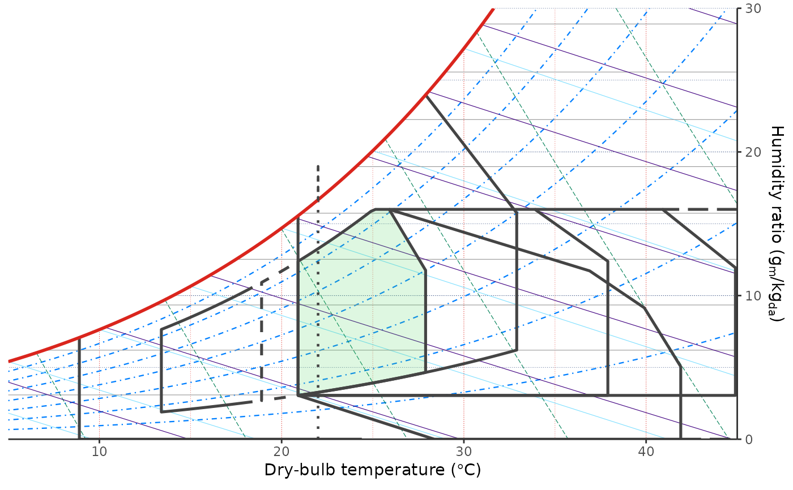

comfort_strategy_givoni() stores the fixed inputs used by
geom_comfort_givoni(). By default it anchors the comfort zone to the
Givoni/Milne 1979 bounds: 20 to 25.5 degrees C dry-bulb temperature and 20%
to 80% relative humidity with the hot-humid corner clipped. The adaptive
variant shifts the base comfort zone from a mean outdoor temperature.
Strategy zones are drawn in dry-bulb/relative-humidity space before conversion
to humidity ratio.
Arguments
- mean_outdoor
Mean or running-mean outdoor temperature used when
variant = "adaptive". It is ignored whenvariant = "fixed"and can beNULLfor that variant.- units
Unit system for
mean_outdoor,"SI"or"IP".- variant
Givoni-Milne strategy variant.
"fixed"uses the fixed 1979 comfort anchor;"adaptive"shifts the comfort anchor frommean_outdoor.- tdb_range
Optional dry-bulb comfort-anchor range used when
variant = "fixed". Values useunits. WhenNULL, the fixed variant uses 20 to 25.5 degrees C.- relhum_range
Relative-humidity comfort-anchor range in percent.
Details
This overlay is a climate-screening and design-strategy aid. It should not be interpreted as a comfort-standard compliance method or as a substitute for building energy/thermal simulation. In particular, the high-mass and night ventilation regions indicate potential strategy ranges; using them to count comfort hours requires daily temperature profiles, nighttime conditions, and building assumptions that are outside this layer.
References
Milne M, Givoni B. Architectural design based on climate. In: Watson D, ed. Energy Conservation Through Building Design. McGraw-Hill; 1979:96-113.
Givoni B. Comfort, climate analysis and building design guidelines. Energy and Buildings. 1992;18(1):11-23. doi:10.1016/0378-7788(92)90047-K
Herb S, Wolk S, Reinhart C. Beyond the bioclimatic chart: An automated simulation-based method for the assessment of natural ventilation and passive design potential. Building and Environment, 269, 112362. doi:10.1016/j.buildenv.2024.112362
Examples
# Create the fixed Givoni/Milne 1979 strategy.
comfort_strategy_givoni()
#> $mean_outdoor
#> [1] NA
#>
#> $units
#> [1] "SI"
#>
#> $variant
#> [1] "fixed"
#>
#> $tdb_range
#> NULL
#>
#> $relhum_range
#> [1] 20 80
#>
#> attr(,"class")
#> [1] "PsyComfortGivoniStrategy" "list"
# Create an adaptive Givoni-Milne strategy for a warm outdoor mean.
comfort_strategy_givoni(variant = "adaptive", mean_outdoor = 22)
#> $mean_outdoor
#> [1] 22
#>
#> $units
#> [1] "SI"
#>
#> $variant
#> [1] "adaptive"
#>
#> $tdb_range
#> NULL
#>
#> $relhum_range
#> [1] 20 80
#>
#> attr(,"class")
#> [1] "PsyComfortGivoniStrategy" "list"
# Or provide project-specific comfort anchor ranges.
comfort_strategy_givoni(
tdb_range = c(22, 27),
relhum_range = c(30, 70)
)
#> $mean_outdoor
#> [1] NA
#>
#> $units
#> [1] "SI"
#>
#> $variant
#> [1] "fixed"
#>
#> $tdb_range
#> [1] 22 27
#>
#> $relhum_range
#> [1] 30 70
#>
#> attr(,"class")
#> [1] "PsyComfortGivoniStrategy" "list"
# Draw the Givoni strategy overlay for that outdoor mean.
ggpsychro(tdb_lim = c(5, 45), hum_lim = c(0, 30)) +
geom_comfort_givoni(
strategy = comfort_strategy_givoni(
variant = "adaptive",
mean_outdoor = 22
),
labels = FALSE
)
